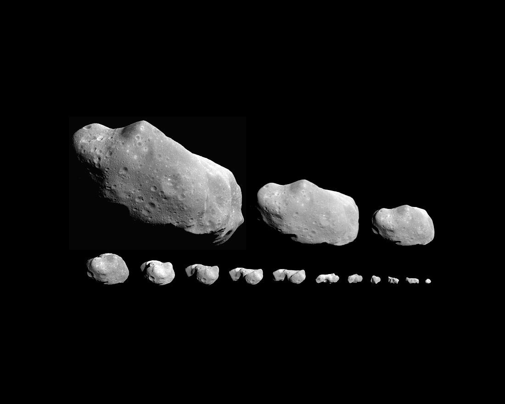

02. 소행성의 자전과 모양
모양을 추론하기
탐구 질문과 학습목표
빛의 변화만으로 추론한 에로스의 자전주기와 모양은 실제와 얼마나 맞을까?
1여러 밤의 관측 자료를 위상으로 접어 소행성의 자전주기를 구할 수 있다.다섯 밤 자료 → 주기 맞추기
2AI가 낸 분석 결과를 자료와 물리적 근거로 검증할 수 있다.AI 답변 사례 → 검증과 고쳐 쓰기
3모형을 관측에 맞추어 소행성의 모양을 추론하고 탐사선 결과와 비교할 수 있다.모형 맞추기 → NEAR 슈메이커와 비교
지난 시간 복습
1975년 1월 23일 밤의 에로스
· 극대 2번
· 극대 사이 약 2시간 반
· 맞는 가설 길쭉한 돌
더 정확하게 측정하려면
한 바퀴 남짓
극대 위치를 몇 분만 잘못 읽어도 주기가 크게 달라짐
수십 바퀴
작은 오차가 바퀴 수만큼 쌓여 눈에 보임 → 분 단위까지
여러 밤의 관측을 하나의 곡선으로 잇는 방법은?
1975년 1월, 다섯 밤의 관측
미국·루마니아·이탈리아 천문학자들의 측광 589점 · DAMIT 공개 자료(CC BY 4.0)
탐구 시뮬레이터
주기 맞추기
남길 것: 시도한 주기와 흩어짐, 최종 주기
AI 답 검증
남길 것: 판정과 고쳐 쓴 결론
모형 맞추기
남길 것: 가장 잘 맞는 a/b
탐사선과 비교·정리
남길 것: 탐구 질문에 대한 답
위상 접기
한 바퀴 안에서의 위치 = 위상
0은 출발점, 0.5는 반 바퀴, 1은 다시 출발점
위상 = 시간 ÷ 주기의 소수 부분
예) 주기 5시간, 23시간 뒤
23 ÷ 5 = 4.6바퀴 → 위상 0.6
왼쪽: 1975년 1월 23일 밤의 실제 기록에 위상을 표시
주기가 틀리면
4.000시간으로 접은 모습
점이 흩어진다
탐색에서 찾은 주기로 접으면 어떻게 달라졌나?
AI 답변 사례
“첨부한 CSV는 소행성 에로스를 1975년 1월 다섯 밤 동안 측광한 자료입니다. 자전주기를 구해 주세요.”
자전주기: 2.632 시간
AI의 결론: “에로스의 자전주기는 약 2.63시간입니다.”
검증 과제
① AI 값 2.632시간으로 접어 보기
② 내가 찾은 주기로 접어 보기
③ 어느 쪽이 한 바퀴인지 판정 · 근거는 1차시 모양별 밝기 곡선
④ AI의 답을 고쳐 쓰기
밝기로 모양 읽기

갈릴레오 탐사선이 지나가며 찍은 이다(1993). 도는 동안 보이는 모습이 바뀐다.
넓은 면이 보이면 밝다
좁은 면이 보이면 어둡다
더 길쭉할수록 밝기 차가 커진다
2000년, 탐사선이 본 에로스


NEAR 슈메이커가 2000년 2월 14일 에로스 궤도에 들어가 1년 동안 직접 관측
크기 34.4 × 11.2 × 11.2 km
자전주기 5.270시간
빛으로 추론한 내 값과 비교
탐구 질문에 답하기
빛의 변화만으로 추론한 에로스의 자전주기와 모양은 실제와 얼마나 맞을까?
→ 자전주기는 탐사선 값과 거의 같고, 길쭉한 모양도 맞지만 길쭉한 정도는 단순한 모형의 가정 때문에 작게 나옴
1내가 찾은 자전주기와 그 근거(흩어짐)
2AI 답에서 틀린 곳과 고쳐 쓴 결론
3모형으로 추론한 모양과 탐사선 관측의 같은 점·다른 점